2026년 행정사무감사 질의서 (발언용 · 5분) — 기관 1일차
찾아가는 문화복지공연, 공연은 줄고 남부 도시는 지워졌다
— 북부만 세는 성과지표, 읍면 없는 남부 도시 취약계층은 0점
문화체육관광위원회 황은화 위원 → 경기아트센터 사장(문화나눔팀)
| ① 예산은 그대로, 공연은 4할 감소 | 예산 5.5억 → 5.01억 → 5억(△9%)인데 공연 154 → 125 → 91회, 관람 49,820 → 29,600명(△41%) → 10.12. 현재 소요예산 32,385만 원(64.8%) — 남은 두 달 반에 약 49회를 몰아서 해야 한다 |
| ② 북부만 세는 지표, 남부 도시는 0점 | 경영평가 지표 북부 공연횟수 50%, 남부는 읍면만 20%. 기관장 지표도 “문화나눔 경기북부 공연 비율” → 읍면이 없는 안양·오산·의왕(3년 1회)·성남(2회)·안산(1→1회)은 지표상 0점. 평가위원도 “비율 근거 없다” |
| ③ 문화복지인데 대상도, 실적도 흔들린다 | 문화배려계층(노인·장애인 등) 공연 13~18%. 2026년 관람 1,870명 vs 공통-17 ‘소외계층’ 11,670명 → 2024년 소외계층 수혜 71,555명 > 전체 관람 37,350명. 2027년 사업비 196억 → 30억 |
※ 의원실 메모 (발언 제외) · 아트센터-04번은 김승기·안시현·채명신 위원과 공동 요구, 아트센터-03번은 이진형·이병숙·김승기·안시현·전예슬 위원 요구 자료다. 같은 자료로 공연 감소·출연단체 질의가 먼저 나올 수 있어, 이 질의는 시군 배분·대상·실적 정합성에 무게를 둔다. · 이미정 위원 아트센터 질의(평정·채용·1000원 티켓)와 중복 없음. · 질문 2 방향(수정): 북부 우선 자체는 비판하지 않는다. 경영평가 지표와 기관장 지표에 북부 우선이 명시돼 있어 "치우쳤다"로 물으면 "지표대로 했다"로 끝난다. 문제는 지표가 정한 "문화복지 소외지역 = 북부 + 남부 읍면"이 남부 동(洞) 지역 취약계층을 통째로 뺀 것이다. · 지표 실적 "북부 73회"(2025년)는 의원실이 04번 공연 목록에서 센 2025년 북부 공연 73회와 정확히 일치한다. 지표가 이 사업 실적으로 산정된다는 뜻이다. · 공연횟수·시군·대상 집계는 아트센터-04번 공연별 내역 370행을 의원실이 전수 집계한 값이다(근거 2·5·9). 권역은 아트센터 표기(‘지역1’)를 그대로 따랐다(양평 ‘북부’ 표기). ‘북부 59%’는 "아트센터 분류 기준"이라고 말한다. · 공통-17과 04번 숫자가 다른 이유를 단정하지 않는다. "같은 사업인데 자료마다 숫자가 다르다"로 묻고 정정자료를 받는다. · 2027년 예산은 현장정책회의(10.26.) 「문체국 본예산안」 기준이다. 아트센터 사업비 196억 원 → 30억 원 안에 찾아가는 공연이 남는지는 자료에 없다 — 존치 여부를 묻는다. |
※ 발언 중 [근거 n] 표시는 맨 뒤 「근거자료」 번호입니다.
■ 발언 — 도입
사장님, 찾아가는 문화복지공연 ‘문화나눔’에 대해 묻겠습니다.
이 사업의 목적은 아트센터가 직접 적었습니다. "문화배려계층·취약지역을 찾아가는 공연"입니다. 공연장에 오기 어려운 도민에게 공연을 가져가는 사업입니다. [근거 1]
그래서 세 가지를 보겠습니다. 얼마나 갔는지, 어디로 갔는지, 누구에게 갔는지입니다.
▶ 질문 1. 예산은 그대로인데, 공연은 4할 줄었습니다
예산은 2024년 5억 5천만 원, 2025년 5억 1백만 원, 올해 5억 원입니다. 거의 그대로입니다. [근거 1]
그런데 공연은 154회에서 125회, 올해 91회입니다. 관람객도 4만 9천8백 명에서 2만 9천6백 명으로 줄었습니다. 2년 만에 4할이 빠졌습니다. [근거 1] [근거 2]
공연별 소요예산을 모두 더해 보면, 10월 12일 현재 3억 2,385만 원, 예산의 64.8%입니다. 남은 1억 7,615만 원을 쓰려면 회당 평균으로 약 49회를 두 달 반 안에 해야 합니다. [근거 2]
올해 관람객 2만 9천6백 명 가운데 8천 명은 단 두 번의 공연입니다. 부천 3천 명, 연천 5천 명, 모두 ‘지역주민’ 대상입니다. 이 두 번을 빼면 실제 관람은 더 줄어듭니다. [근거 2] [근거 3]
사장님, 같은 예산으로 공연이 왜 63회나 줄었습니까? 남은 예산은 연말까지 어떻게 쓰실 겁니까?
▷ "출연료·운영비가 올라 회당 단가가 높아졌다"
→ 회당 출연료는 3년 내내 250만 원 그대로입니다. 회당 평균 소요예산도 346만 원에서 356만 원, 3% 남짓 올랐을 뿐입니다. 단가로는 63회 감소가 설명되지 않습니다. [근거 2] [근거 4]
▷ "하반기에 공연이 몰려 있어 연말까지 정상 집행하겠다"
→ 12월에 몰아서 하면 수요처를 고를 시간이 없습니다. 신청받은 곳이 아니라 잡히는 곳으로 가게 됩니다. 남은 기간 월별 회차·시군·대상을 감사 기간 안에 내 주십시오.
▶ 질문 2. 성과지표가 남부 도시를 지웠습니다
3년간 370회를 시군별로 모두 세어 봤습니다. 파주 42회, 남양주 38회, 고양 36회, 세 곳이 116회, 31%입니다. 반대로 안양·오산·의왕은 3년에 1회, 성남은 2회입니다. 안산은 2024년 5회에서 2025년·올해 각 1회입니다. [근거 5] [근거 3]
이유를 찾았습니다. 아트센터 경영평가 성과지표입니다. 「문화나눔 균형 발전을 위한 노력」 지표는 북부지역 공연횟수 50%, 남부는 ‘읍면’ 공연횟수만 20%를 반영합니다. 2025년 북부 목표 61회에 실적 73회였습니다. 제가 공연 목록에서 센 2025년 북부 공연도 정확히 73회입니다. [근거 6]
기관장 성과지표도 “문화나눔 경기북부 공연 비율”입니다. 작년 3월 새 사장님이 오시고도 그대로 유지했습니다. 아트센터는 관람객 수를 지표에 넣으면 “인구 고밀도 지역 수혜 편중”이 생긴다고 적었습니다. [근거 7]
북부를 챙기는 것은 옳습니다. 문제는 이 지표가 정한 문화복지 소외지역이 “북부와 남부 읍면”뿐이라는 점입니다. 안양·성남·오산·의왕·안산에는 읍면이 없습니다. 이 도시에서 몇 번을 공연해도 지표상 0점입니다. 그 도시에 사는 홀로 계신 어르신, 장애인, 이주민 가정이 지표에서 지워졌습니다.
실제 공연을 대상별로 나눠 보면 더 분명합니다. 북부가 많은 것은 학교 공연입니다. 북부 96회, 남부 28회입니다. 정작 노인·장애인 등 문화배려계층 공연은 남부 36회, 북부 19회로 남부가 더 많았습니다. 수요는 남부 도시에도 있습니다. [근거 5]
평가위원도 지적했습니다. 2024년 평가는 “북부 50%, 남부 20% 비율에 근거가 없고, 3개년 평균은 남부가 더 많다”고 했습니다. 2025년 평가는 “횟수보다 참여자 수로 재라”고 했습니다. 그런데 올해 평가에도 같은 산식이 그대로입니다. [근거 8] [근거 6]
사장님, 남부 도시의 문화배려계층은 왜 이 지표에서 빠졌습니까? 북부 50%, 남부 읍면 20%는 무슨 근거로 정했습니까?
▷ "북부는 문화기반시설이 부족한 문화소외지역이다"
→ 지역만 보고 사람은 보지 않은 지표입니다. 남부 대도시에도 공연장에 오기 어려운 분들이 있고, 실제 노인·장애인 공연 수요는 남부가 더 많았습니다. 지표에 문화배려계층 참여자 수를 넣고, 남부 동 지역 복지시설·취약계층도 소외 대상에 포함해 주십시오. [근거 5]
▷ "평가위원 지적에 따라 목표 산정 방식을 고쳤다"
→ 바뀐 것은 목표를 정하는 방식뿐입니다. 북부 50%, 남부 읍면 20% 산식은 그대로입니다. 3년째 같은 지적을 받고도 고치지 않았습니다. 2027년 지표 개선안을 경영평가 지표 확정 전에 위원회에 보고해 주십시오. [근거 6] [근거 8]
▷ "공연 장소는 공모 단체가 섭외한다"
→ 단체도 지표에 맞춰 움직입니다. 배정 기준은 “단체별 연간 3회 이상”뿐이고 시군·대상 기준은 없습니다. 지표와 배정 기준을 함께 고쳐야 3년에 1회인 도시가 없어집니다. [근거 4]
▶ 질문 3. ‘문화복지’인데 대상도, 실적도 흔들립니다
누구에게 갔는지 보겠습니다. 공연별 수혜대상을 분류하면 노인·장애인·환자 같은 문화배려계층 공연은 13~18%입니다. 올해는 학생 대상이 45%입니다. 2025년 소방관·군인 대상 ‘문화쉼터’와 ‘문화피크닉’을 통합하면서 대상이 넓어졌습니다. [근거 9]
실적 숫자도 맞지 않습니다. 같은 문화나눔 사업인데, 공통 요구자료 17번은 올해 ‘문화소외계층 수혜 11,670명’이라고 했습니다. 공연별 내역에서 문화배려계층 공연 관람은 1,870명입니다. [근거 9] [근거 10]
2024년은 더 큽니다. 소외계층 수혜 71,555명이라고 했는데, 그해 문화나눔 전체 관람이 37,350명입니다. 전체보다 일부가 두 배 많습니다. [근거 9] [근거 10]
집행액도 다릅니다. 17번 자료로는 2025년 집행률이 47.7%인데, 집행률 50% 미만 사업 자료에는 2025년 "해당사항 없음"입니다. 올해는 비슷한 우리동네국악콘서트를 이 사업과 겹친다며 취소했고, 공동주택 공연도 2억 원 감액했습니다. [근거 9] [근거 11]
그리고 내년입니다. 2027년 아트센터 출연금 사업비가 196억 원에서 30억 원으로 줄어듭니다. 사업 추진 방안은 "공동주최·대중장르 등 수익공연 중심"입니다. 찾아가는 문화복지공연은 수익이 나지 않는 사업입니다. [근거 12]
사장님, 어느 숫자가 맞습니까? 그리고 2027년에 찾아가는 문화복지공연은 남습니까?
▷ "17번은 공동주택 등 다른 사업 실적이 섞인 것이다"
→ 그렇다면 도의회에 낸 자료가 틀린 것입니다. 실적은 다음 해 예산의 근거가 됩니다. 3개 자료를 맞춰 정정자료를 내 주시고, ‘문화배려계층’ 실적은 대상별로 따로 집계해 주십시오. [근거 10]
▷ "사업비는 줄지만 우선순위를 정해 최대한 유지하겠다"
→ 수익공연 중심으로 가면 가장 먼저 밀리는 것이 이 사업입니다. 30억 원 안에서 찾아가는 공연을 몇 회, 어느 대상으로 남기는지 숫자로 답해 주십시오. 줄인다면 노인·장애인 시설과 공연이 적은 시군부터 지켜야 합니다. [근거 12]
■ 마무리 · 요구사항
사장님, 찾아가는 공연은 공연장에 오기 어려운 도민을 위한 사업입니다. 같은 예산으로 공연은 4할 줄었습니다. 성과지표는 북부만 세고, 읍면 없는 남부 도시는 3년에 한 번입니다. 문화배려계층 공연은 열에 두 번이 안 됩니다. 내년 예산마저 크게 줄어듭니다. 줄어들수록 기준이 필요합니다. 꼼꼼히 챙기겠습니다.
하나, 2026년 문화나눔 잔여 예산(약 1억 7,615만 원) 집행계획을 월별 회차·시군·수혜대상으로 감사 종료 전까지 제출하고, 연말 집행 결과와 불용액·사유를 2027년 1월까지 보고해 주십시오.
둘, 성과지표와 배정 기준을 고쳐 주십시오. ① 「문화나눔 균형 발전」 지표의 문화복지 소외지역에 남부 동 지역 문화배려계층 시설을 포함하고, ② 북부·남부 반영 비율의 객관적 근거를 제시하며, ③ 공연 횟수 대신 문화배려계층 참여자 수를 지표로 삼고, ④ 3년간 1회 이하 시군(안양·오산·의왕·성남 등) 우선 배정 기준을 담아 2027년 경영평가·기관장 성과지표 확정 전(2027년 2월)까지 보고해 주십시오.
셋, 아트센터-04번·공통-17번·공통-11번의 문화나눔 실적(관람인원·집행액)을 대사한 정정자료를 감사 종료 전까지 제출하고, 2027년 사업비 30억 원 안에서 찾아가는 문화복지공연의 존치 여부·규모·대상을 2027년 본예산 상임위 심사 전까지 보고해 주십시오.
■ 참고 · 감사 중 추가 요구자료
· 「문화나눔 균형 발전을 위한 노력」 지표 정의서와 2024~2026년 북부·남부 읍면 공연 산정 목록
· 기관장 성과계약서의 “문화나눔 경기북부 공연 비율” 목표·실적(2025~2026년)
· 문화나눔 공연 배정 기준·내부 지침, 공연 장소 결정 절차(수요처 신청 / 단체 섭외 구분)
· 시군별 신청·배정·미배정 현황(2024~2026년, 신청기관 유형별)
· 공연별 소요예산 세부내역(출연료 2,500천원 외 무대·음향·운송 등) — 04번에서 요구했으나 미제출
· 아트센터-04번 「문제점 및 개선점, 향후계획」 — 요구 항목이나 미제출
· 공통-17번 문화나눔 수혜인원(71,555·28,615·11,670명) 산출 근거와 집행액 기준
· 2027년 경기아트센터 사업비 30억 원 세부 편성안(찾아가는 문화복지공연 포함 여부)
근 거 자 료
빨간 상자·번호는 발언에서 짚는 부분입니다. "원문 재현"은 한글·마크다운 변환 원문을 그대로 옮겨 표시한 것이고, "의원실 산출"은 원자료(아트센터-04번 공연별 내역 370행)를 집계한 값입니다.
▶ 질문 1 관련
근거 1. 사업 목적과 운영 현황 — 예산은 그대로, 공연·관람은 감소 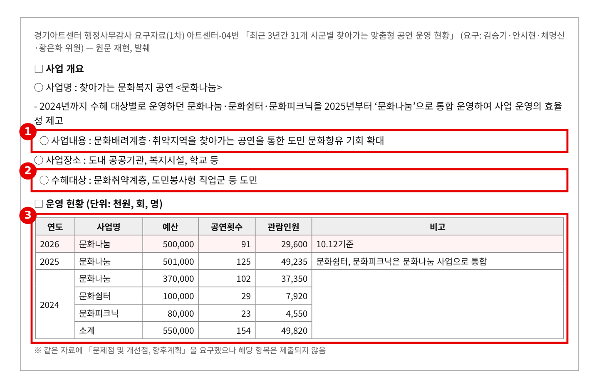
※ 출처: 경기아트센터 2026년 행정사무감사 1차 요구자료 아트센터-04번 「최근 3년간 31개 시군별 찾아가는 맞춤형 공연 운영 현황(문화나눔/문화쉼터/문화피크닉)」(문화나눔팀) (원문 재현, 발췌) |
근거 2. 연도별 소요예산 · 회당 단가 · 2026년 집행 속도 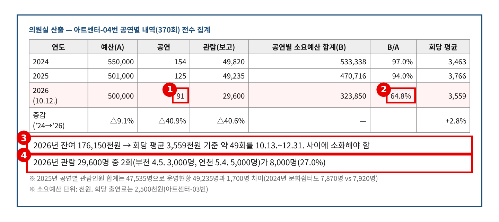
※ 출처: 의원실 산출 — 경기아트센터 2026년 행정사무감사 1차 요구자료 아트센터-04번 「최근 3년간 31개 시군별 찾아가는 맞춤형 공연 운영 현황(문화나눔/문화쉼터/문화피크닉)」(문화나눔팀) 공연별 내역 전수 집계 |
근거 3. 공연별 내역 발췌 — 안산 · 2026년 대형 공연 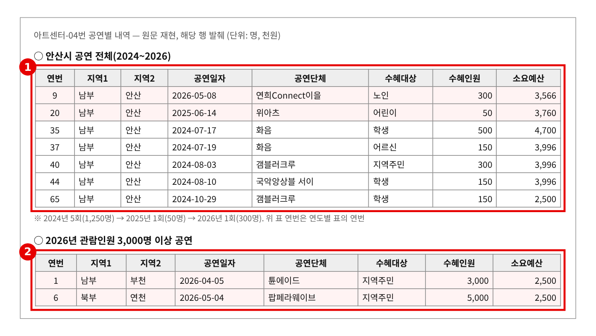
※ 출처: 경기아트센터 2026년 행정사무감사 1차 요구자료 아트센터-04번 「최근 3년간 31개 시군별 찾아가는 맞춤형 공연 운영 현황(문화나눔/문화쉼터/문화피크닉)」(문화나눔팀) 공연별 내역 (원문 재현, 해당 행 발췌) |
근거 4. 출연단체 선정·배정 기준 — 시군·대상 기준 없음 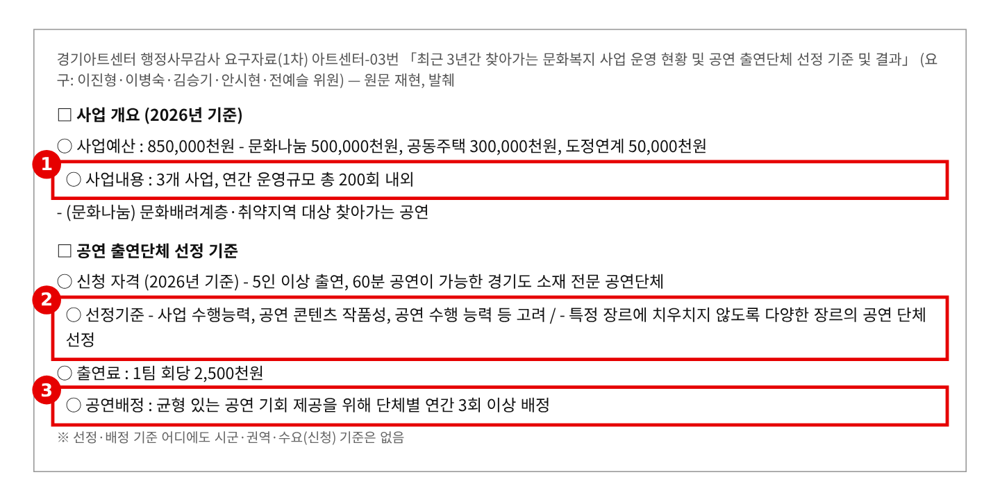
※ 출처: 경기아트센터 2026년 행정사무감사 1차 요구자료 아트센터-03번 「최근 3년간 찾아가는 문화복지 사업 운영 현황 및 공연 출연단체 선정 기준 및 결과(출연료 포함)」(문화나눔팀) (원문 재현, 발췌) |
▶ 질문 2 관련
근거 5. 31개 시군별 공연횟수 · 북부/남부 대상별 (2024~2026) 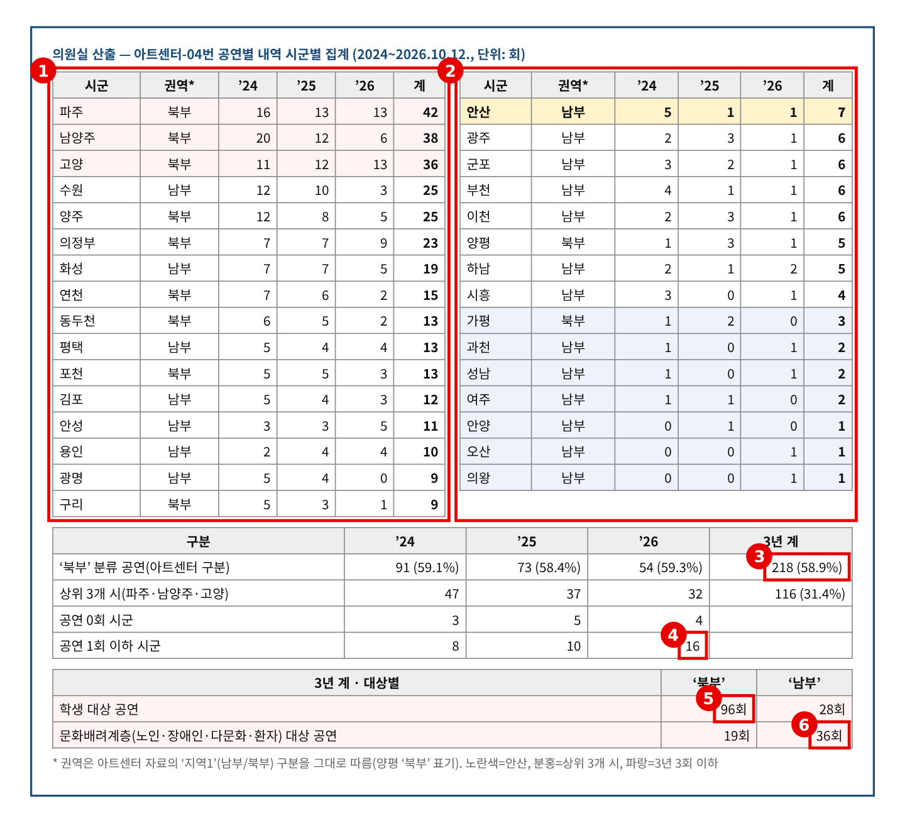
※ 출처: 의원실 산출 — 경기아트센터 2026년 행정사무감사 1차 요구자료 아트센터-04번 「최근 3년간 31개 시군별 찾아가는 맞춤형 공연 운영 현황(문화나눔/문화쉼터/문화피크닉)」(문화나눔팀) 공연별 내역 시군별·대상별 집계 |
근거 6. 경영평가 사업성과 지표 「문화나눔 균형 발전을 위한 노력」 — 북부 50%, 남부 읍면 20% 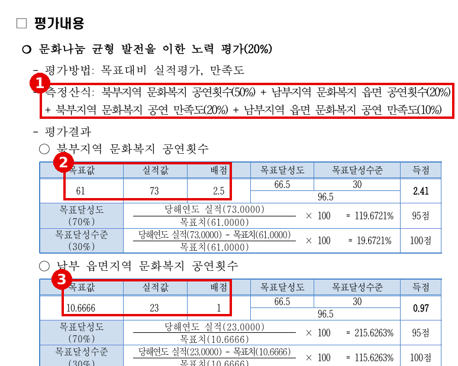
※ 출처: 「2026년(’25년 실적) 경기도 공공기관 경영평가 보고서 – 경기아트센터」 97쪽(사업지표의 달성도 — 제약없는 문화향유 활성화), 91쪽 (경기아트센터 공통-21번 제출 전자파일) |
근거 7. 기관장 성과지표 “문화나눔 경기북부 공연 비율” · 아트센터의 지표 검토 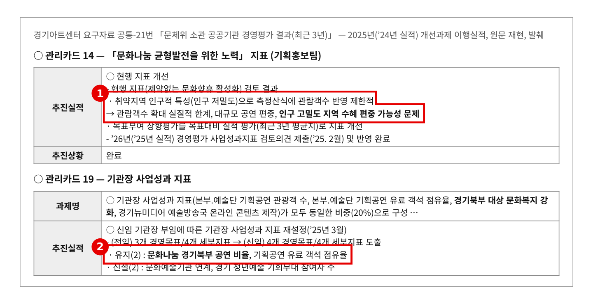
※ 출처: 경기아트센터 2026년 행정사무감사 1차 요구자료 공통-21번 「문체위 소관 공공기관 경영평가 결과(최근 3년)」 2025년(’24년 실적) 개선과제 관리카드 14·19 (원문 재현, 발췌) |
근거 8. 평가위원 지적 — “비율 근거 없다”, “횟수보다 참여자 수” 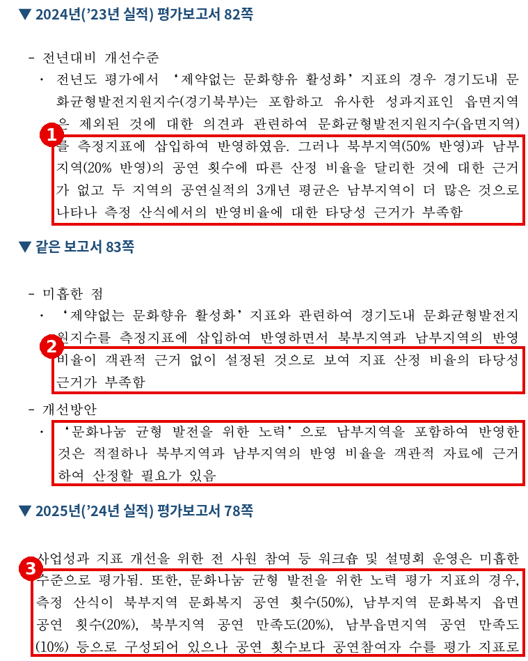
※ 출처: 「2024년(’23년 실적) 경기도 공공기관 경영평가 보고서 – 경기아트센터」 82~83쪽, 「2025년(’24년 실적) 경기도 공공기관 경영평가 보고서 – 경기아트센터」 78쪽 (경기아트센터 공통-21번 제출 전자파일) |
▶ 질문 3 관련
근거 9. 수혜대상 분포 · 자료 간 실적 대조 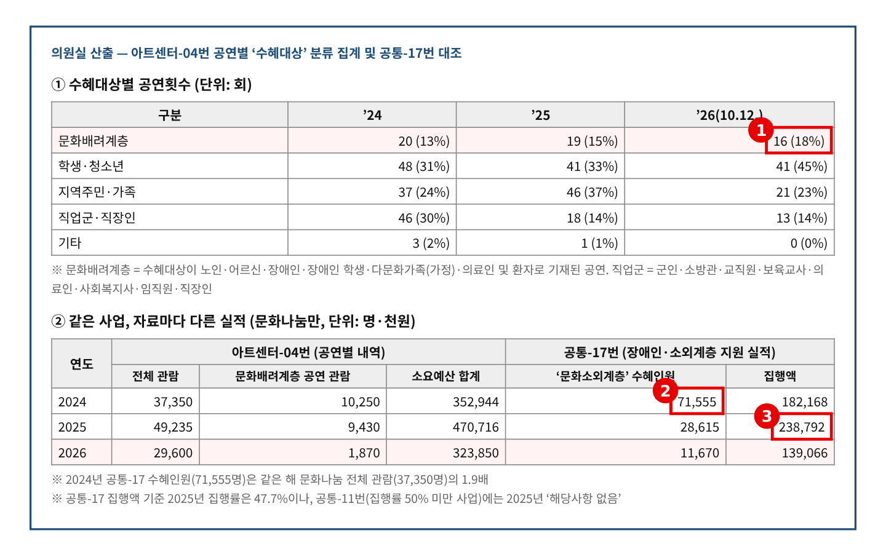
※ 출처: 의원실 산출 — 경기아트센터 2026년 행정사무감사 1차 요구자료 아트센터-04번 「최근 3년간 31개 시군별 찾아가는 맞춤형 공연 운영 현황(문화나눔/문화쉼터/문화피크닉)」(문화나눔팀) 공연별 내역, 공통-17번·공통-11번 대조 |
근거 10. 공통-17번 「장애인 및 소외계층 지원 실적」 — 문화나눔 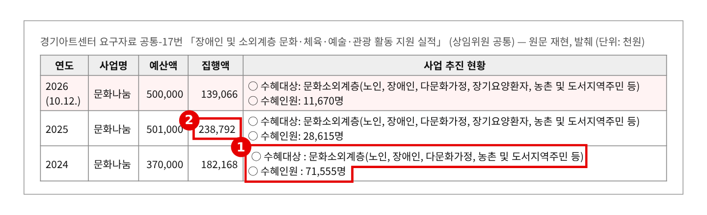
※ 출처: 경기아트센터 2026년 행정사무감사 1차 요구자료 공통-17번 「최근 3년간 장애인 및 소외계층 문화·체육·예술·관광 활동 지원 실적」(문화나눔팀) (원문 재현, 발췌) |
근거 11. 공통-11번 「집행률 50% 미만 사업」 — 관련 사업 취소·감액 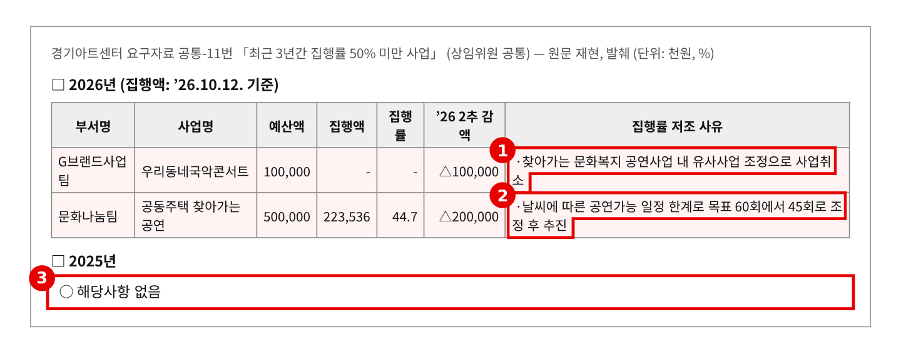
※ 출처: 경기아트센터 2026년 행정사무감사 1차 요구자료 공통-11번 「최근 3년간 집행률 50% 미만 사업」(기획홍보팀) (원문 재현, 발췌) |
근거 12. 2027년 본예산안 — 아트센터 사업비 196억 → 30억 원 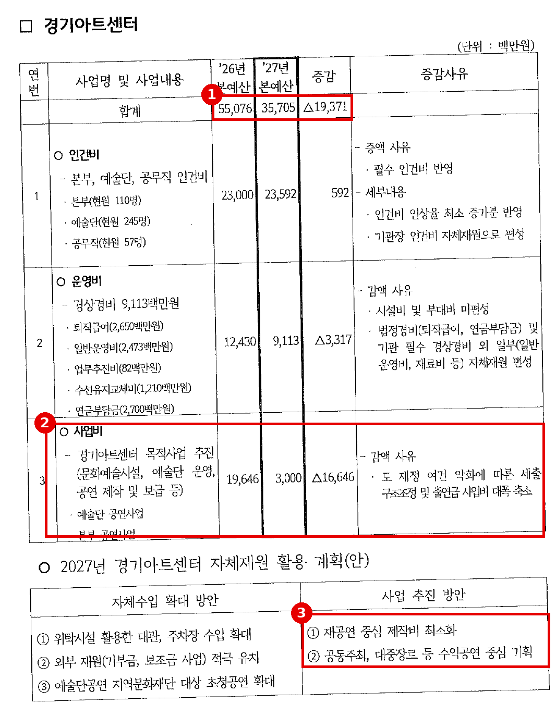
※ 출처: 2026.10.26. 현장정책회의 「문화체육관광국 2027년 본예산안」 81쪽 경기아트센터 (2027년 본예산(안) 가안 기준, 최종본 아님) |